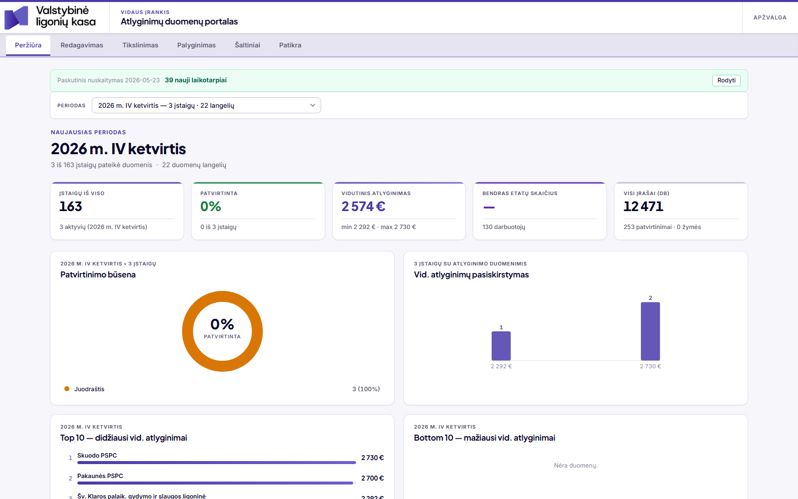
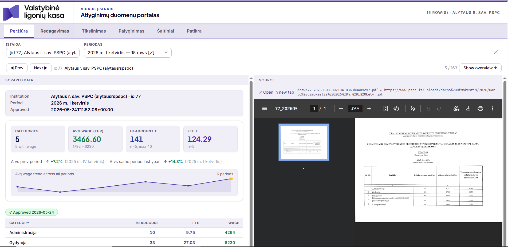
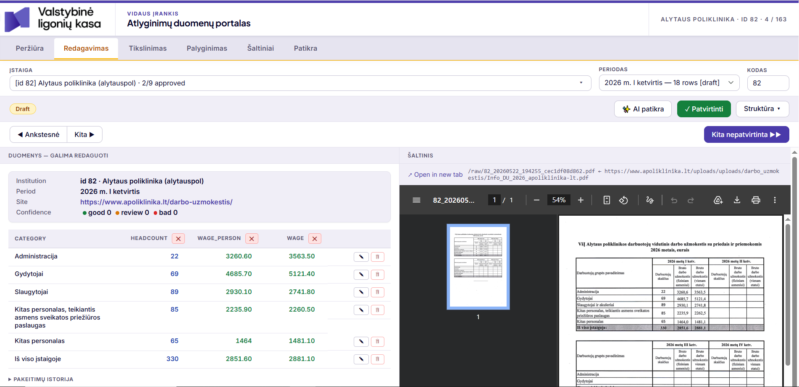
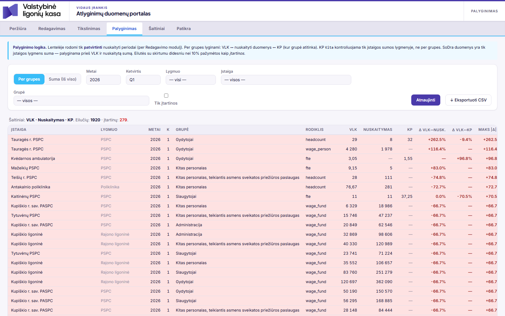
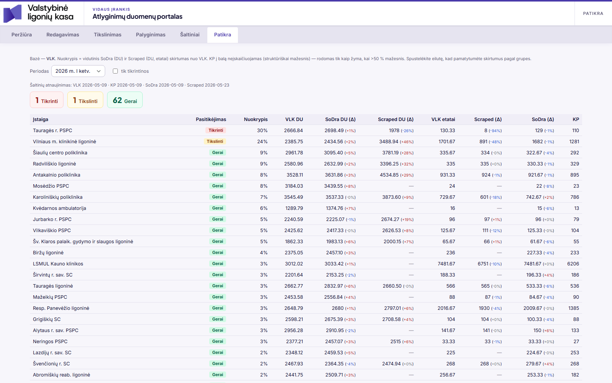
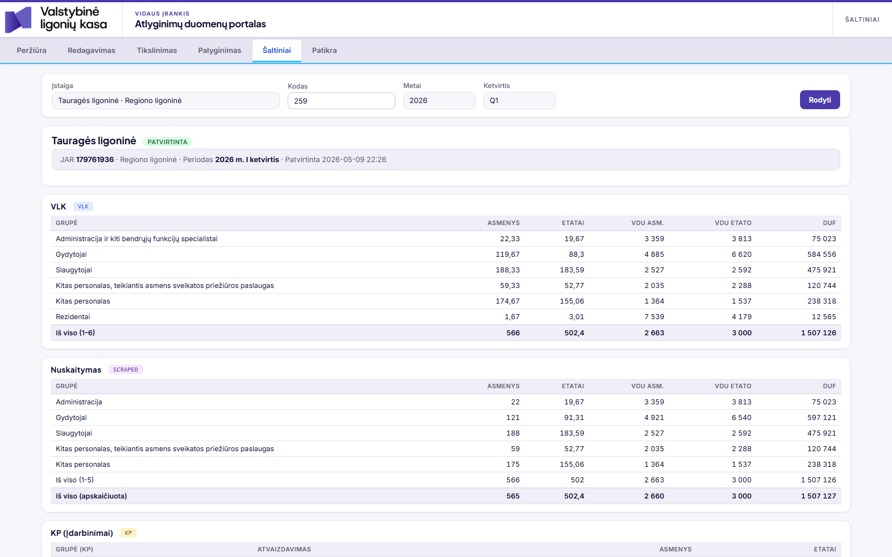

Valstybinė ligonių kasa· Atlyginimų duomenų portalas1 / 12
Vidaus įrankis · 2026
Atlyginimų duomenų portalas
Viena vieta Lietuvos sveikatos priežiūros įstaigų atlyginimų
duomenims surinkti, patikrinti ir patvirtinti.
163 įstaigos4 duomenų šaltiniaiAutomatinis surinkimas + AI patikra
Kodėl to reikia?
Šimtai svetainių — vienas vaizdas
Įstaigos atlyginimų duomenis skelbia kas ketvirtį, kiekviena savaip —
lentelėse, PDF, „Word", „Excel" failuose ar net nuskenuotuose dokumentuose.
Rinkti juos rankomis — lėta ir klaidinga. Portalas šį darbą atlieka automatiškai
ir leidžia komandai matyti, taisyti bei tvirtinti rezultatą vienoje vietoje.
0
Stebimos įstaigos
visas registras
0
Renkama automatiškai
likusios — rankiniu įvedimu
0
Duomenų įrašai
per 19 ataskaitinių laikotarpių
0
Patvirtinti laikotarpiai
paruošti analitikai
Galimybės
Ką sistema atlieka?
Automatiškai surenka
Nuskaito atlyginimų duomenis iš ~139 įstaigų svetainių —
HTML lentelių, PDF, „Word", „Excel" ir net nuskenuotų dokumentų.
Leidžia peržiūrėti ir tvirtinti
Darbuotojai mato duomenis šalia originalaus dokumento,
taiso klaidas ir vienu mygtuku patvirtina laikotarpį.
Palygina su išorės šaltiniais
Sutikrina surinktus skaičius su VLK, „Sodros" ir
Kompetencijų platformos duomenimis — neatitikimai pažymimi automatiškai.
AI patikra prieš tvirtinant
Dirbtinis intelektas sutikrina kiekvieną skaičių su originaliu
dokumentu ir automatiškai patvirtina tik tuos, dėl kurių neabejojama.
Peržiūra
Apžvalgos skydelis
„Kas naujo" — po kiekvieno surinkimo matyti, kiek atsirado naujų laikotarpių.
Pagrindiniai rodikliai — įstaigų aprėptis, vidutinis atlyginimas, patvirtinimo eiga.
Reitingai — didžiausi ir mažiausi vidutiniai atlyginimai pagal įstaigas.
portalas/view — apžvalga

Peržiūra
Įstaigos kortelė
Duomenys šalia šaltinio — kairėje sistema, dešinėje originalus įstaigos dokumentas.
Pokyčių tendencija — atlyginimų kreivė per visus laikotarpius, palyginimas su praėjusiais metais.
Patvirtinimo žyma — iš karto aišku, ar duomenys jau peržiūrėti žmogaus.
portalas/view — Alytaus PSPC · 2026 m. I ketvirtis

Redagavimas
Taisymas ir tvirtinimas
Taisoma tiesiai lentelėje — dukart spustelėjus langelį. Kiekvienas pakeitimas fiksuojamas istorijoje.
Žmogaus taisymai apsaugoti — vėlesnis automatinis surinkimas jų nebeperrašo,
tik įspėja, jei svetainėje skaičius pasikeitė.
„Kita nepatvirtinta" — mygtukas veda per visas dėmesio laukiančias įstaigas iš eilės.
portalas/edit — redagavimas ir patvirtinimas

Palyginimas
Sutikrinimas su išorės šaltiniais
Keturi šaltiniai vienoje lentelėje — VLK, surinkti duomenys, Kompetencijų platforma ir „Sodra".
Įtartinos eilutės paryškinamos — kai skirtumas viršija nustatytą ribą (10 %).
Eksportas — bet kuris pjūvis parsisiunčiamas „Excel"/CSV formatu.
portalas/compare — VLK ↔ nuskaityta ↔ KP ↔ Sodra

Patikra
Pasitikėjimo reitingas
Visos įstaigos surikiuotos nuo labiausiai iki mažiausiai tikrintinų — blogiausios viršuje.
Spalvų juostos — žalia „gerai", geltona „tikslinti", raudona „tikrinti".
Komanda iš karto žino, kur žiūrėti pirmiausia.
Detalizacija — spustelėjus eilutę matomi skirtumai pagal darbuotojų grupes.
portalas/quality — pasitikėjimo reitingas

Šaltiniai
Visi šaltiniai greta
Viena įstaiga, vienas ketvirtis — VLK, surinkti, KP ir „Sodros" duomenys vienas po kito.
Pavyzdyje — Alytaus PSPC surinkti skaičiai beveik idealiai sutampa su VLK
(566 darbuotojai, 1,5 mln. € fondas).
Tyrimo įrankis — kai reikia išsiaiškinti konkretų neatitikimą.
portalas/inspect — Alytaus PSPC · 2026 K1

Procesas
Kaip tai veikia?
Įstaigų svetainės
139 įstaigos skelbia duomenis kas ketvirtį
Automatinis surinkimas
Sistema nuskaito lenteles, PDF, „Word", „Excel" ir skenuotus failus
AI patikra
Skaičiai sutikrinami su originaliu dokumentu dviem nepriklausomais būdais
Žmogaus patvirtinimas
Komanda peržiūri abejotinus atvejus ir patvirtina laikotarpius
Ataskaitos
Patvirtinti duomenys eksportuojami analitikai ir „Excel" ataskaitoms
Svarbiausia taisyklė — žmogus visada turi paskutinį žodį: automatika niekada neperrašo
darbuotojo pataisymų, o AI tvirtina tik tuos duomenis, dėl kurių neabejoja.
Statusas
Dabartinė būklė
Jau veikia
Sistema naudojama kasdieniame darbe — 253 laikotarpiai patvirtinti
Automatinis surinkimas iš ~139 įstaigų, įsk. skenuotus dokumentus
AI patikra su automatiniu tvirtinimu konservatyviu režimu
Palyginimas su VLK, „Sodros" ir KP duomenimis
Tobulinama
Surinkimo tikslumas sudėtingiausioms svetainėms (prastos kokybės skenai)
~24 įstaigos dar pildomos rankiniu būdu — siekiama automatizuoti daugiau
Numatytas perkėlimas iš vieno kompiuterio į vidinį tinklo serverį
Klausimai?
Atlyginimų duomenų portalas · Valstybinė ligonių kasa Vidaus įrankis — demonstracija prieinama vidiniame tinkle